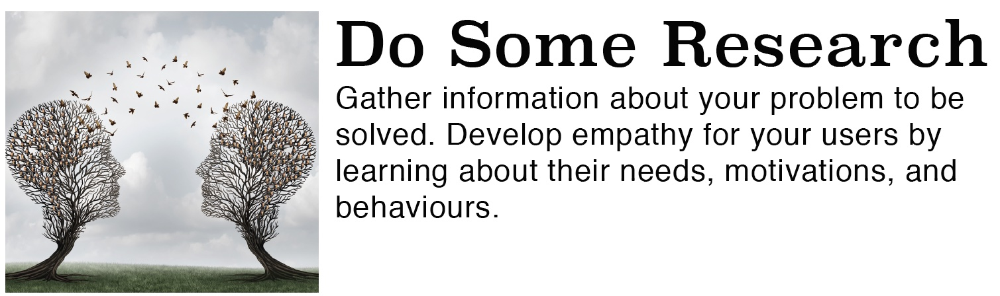
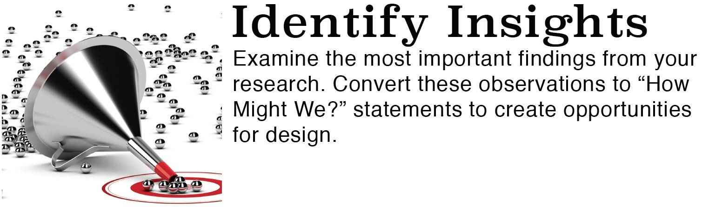
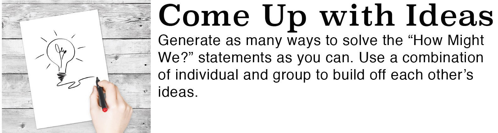
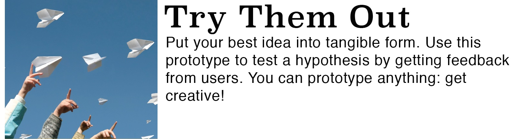
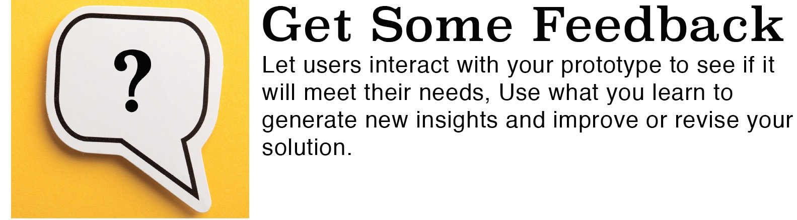

Outcome:
CS30-CAP2: Document and reflect on the process of creating a large-scale computer program.
(a) Create a project proposal that includes the basic premise, required features, desired features and project team (e.g., individual, pairs or larger group).
(b) Develop and revise project documents such as team member tasks, change logs, milestone timeline and/or user manuals.
(c) Report on beta testing with peers and/or external participants.
(d) Discuss the importance of developing technical supports such as user manuals and training materials.

Decide who your target audience is for your game and think about what they will want or need from a program. From here, think of some ideas for a project. Need some help generating an idea for a project? Check out Programming Side Project Ideas: How To Generate Them

After you have decided on a project, generate a list of “How might I/we” statements to help

Find the answers to the “How might I/we” statements from the previous list. From here, generate a checklist of tasks to complete and a timeline for what you want to complete each element. Now would be an appropriate time to create your pseudocode or flowchart, changelog, README file, and GitHub repository.

After you organize your project, start following your plan and get coding! Have your classmates test out your code at various stages for feedback and improve your design and code from the results. This step is part of the alpha testing stage.

After you have a working version of your program, test it out on people in your target audience who have never tried it before. Use what you learned from their feedback to improve or revise your design and code. This step is part of the beta testing stage.